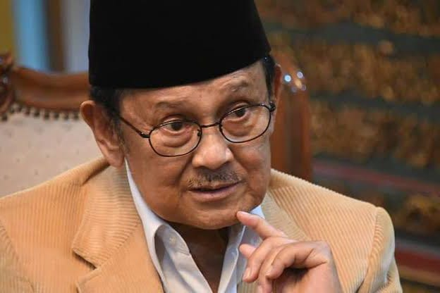

Bacharuddin Jusuf Habibie (Indonesian: [baxaˈrudːin ˈjusuf haˈbibi] ⓘ, 25 June 1936 – 11 September 2019) was an Indonesian politician, engineer and scientist who served as the third president of Indonesia from 1998 to 1999. Less than three months after his inauguration as the seventh vice president in March 1998, he succeeded Suharto, who resigned after 32 years in office. Originating from Sulawesi with Bugis-Gorontalese and Javanese ancestry,[2][3][4] his presidency was seen as a landmark and transition to the Reform era.
Upon becoming president, he liberalized Indonesia's press and political party laws; ended Indonesian occupation of East Timor, which led to that country's independence; and held an early democratic election three years sooner than scheduled, which resulted in the end of his presidency. His 517-day presidency and 71-day vice presidency were each the shortest in Indonesian history. Before entering government, Habibie contributed to the making of Indonesia's first domestic airplane, the IPTN N-250. As a result, he was granted the title "Father of Technology".[5]